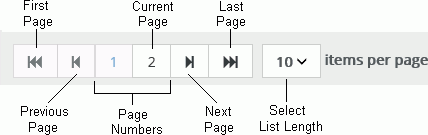
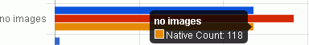
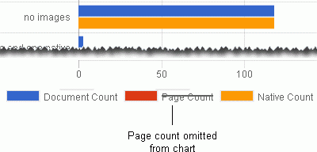

Note: If the report window is not active, select it.
Reports open in individual windows or tabs (depending
on your browser and its settings), and may include charts (pie charts,
bar charts, etc.), tables, and other content depending on the report type.
Report windows remain open even if
After generating a report, view the report and take any of the actions described below when viewing report data.
|
|
Note: If the report window is not active, select it. |
Maximize the window size.
Scroll vertically and/or horizontally to view all information.
Click a report and press the PgUp and PgDn keys for easy scrolling.
Click a report, press Ctrl, and use the mouse wheel to magnify (or reduce the size of) the report.
Use the browser’s Find function to find specific terms in a report.
Click a column heading to sort by that column. Click again to reverse the sort order. When the data is sorted, the related charts update to reflect the change.
|
|
Note: If pie charts contain more than 20 rows of data, the top 19 records, based on the data value shown in the pie chart, are always shown in the pie chart while the remaining items are combined into the “Other” type category. Groupings do not change, but the order of the remaining items does change to reflect the sorting of the grid. The “Other” type category will always be the last item. |
Long tables may include multiple pages. Use the navigation bar to view all pages:

Point to a chart area (slice of pie chart, bar on graph, etc.) to view a tooltip with detailed information. For example, in the following excerpt from a Production Summary report, the tooltip indicates that, for a production job named “no images,” 118 native files exist (as indicated in the chart):

Charts
(pie chart, bar graph, etc.) are dynamic in the
Click legend item(s) to omit the item(s) from the chart.
Click each legend item again to reinstate the item to the chart.
For example, the following figure shows the same “no images” data (in the above figure) with the Page Count omitted:

Some reports include several sections. For example, the Data Extract Summary Report includes the File Type, Classification, Errors, and Data Set sections.
|
|
Note the following when working in a multi-part report:
|